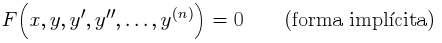
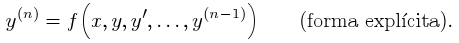
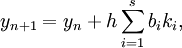
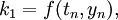
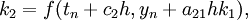
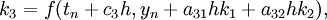
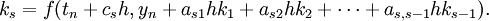
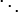
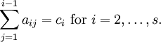

|
Es frecuente, en numerosos problemas de mecánica teoría de
circuitos eléctricos, que las ecuaciones que rigen los procesos sean de orden mayor que uno.
Por lo tanto, será necesario trabajar con ecuaciones diferenciales de a orden superior.
Una ecuación diferencial ordinaria de orden n es una
ecuación que liga la variable independiente x, una función incógnita y = y(x) y sus derivadas
sucesivas (y', y'', ...,yn), es decir, es una expresión, bien de la forma:

o bien, si se puede despejar la derivada de mayor orden,

Los métodos de Runge-Kutta son una importante familia de
métodos iterativos tanto implicitos como explícitios para aproximar las soluciones de
ecuaciones diferenciales ordinarias (E.D.O´s), estas técnicas fueron desarrolladas alrededor de
1900 por los matematicos alemanes Carl David Tolmé Runge y Martin Wilhelm Kutta
La familia de los metodos Runge-Kutta explicitos esta dado
por la generalizacion del método RK4, esta
dado por:




por lo tanto:

Para especificar un método en particular , se necesita
proveer un valor entero s (numero de etapas), y los coeficientes aij (para 1 ≤ j < i ≤ s), bi
(para i = 1, 2, ..., s) and ci (para i = 2, 3, ..., s). Esos valores usualmente son organizados
en una tabla conocida como Butcher tableau o arreglo de Butcher (por John C. Butcher):
|
0 |
|
c2
|
a21
|
|
c3
|
a31
|
a32
|
|

|
|
|

|
|
cs
|
as1
|
as2
|

|
as,s − 1
|
|
|
|
b1
|
b2
|
|
bs − 1
|
bs
|
El método Runge-Kuta es consistente si

|